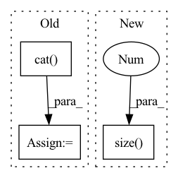

Pattern ID :834
Before Change
dist_ap.append(dist[i][pos_mask[i]].max().unsqueeze(0))
dist_an.append(dist[i][neg_mask[i]].min().unsqueeze(0))
dist_ap = torch.cat( dist_ap)
dist_an = torch.cat(dist_an)
// Compute ranking hinge loss
y = torch.ones_like(dist_an)After Change
dist_mat = pairwise_euclidean_distance(f, xbm_f)
// hard examples mining
n, m = f.size(0 ) , xbm_f.size(0)
identity_mat = labels.expand(m, n).t().eq(xbm_labels.expand(n, m)).float()
dist_ap, dist_an = hard_examples_mining(dist_mat, identity_mat)
In pattern: SUPERPATTERN
Frequency: 3
Non-data size: 3
Instances Fragment ID: 2638992
Project Name: thuml/transfer-learning-library
Commit Name: 0f8f51c4b2fac78edf87e29764e4da3deec6f65f
Time: 2021-10-14
Author: 57670068+tsingcbx99@users.noreply.github.com
File Name: common/vision/models/reid/loss.py
M Class Name: TripletLossXBM
N Class Name: TripletLossXBM
M Method Name: forward(5)
N Method Name: forward(5)
M Parent Class: nn.Module
N Parent Class: nn.Module
M File Name: common/vision/models/reid/loss.py
N File Name: common/vision/models/reid/loss.py
M Start Line: 132
M End Line: 152
N Start Line: 154
N End Line: 162
Before Change
//xs = [torch.squeeze(k) for k in xs]
for x in xs:
hs, cs = self.rim_model(row_index, ind, x, hs, cs)
h = torch.cat( hs, dim = 1)
preds = self.Linear(h)
if y is not None:
y = y.long()
probs = nn.Softmax(dim = -1)(preds)After Change
//xs = [torch.squeeze(k) for k in xs]
for x in xs:
hs, cs = self.rim_model(row_index, ind, x, hs, cs)
preds = self.Linear(hs.contiguous().view(x.size(0 ) , -1))
if y is not None:
y = y.long()
probs = nn.Softmax(dim = -1)(preds) Fragment ID: 2638993
Project Name: dido1998/recurrent-independent-mechanisms
Commit Name: d87a800096eaa36730cbabac535eea24973f3799
Time: 2020-02-11
Author: adidolkar123@gmail.com
File Name: networks.py
M Class Name: MnistModel
N Class Name: MnistModel
M Method Name: forward(5)
N Method Name: forward(5)
M Parent Class: nn.Module
N Parent Class: nn.Module
M File Name: networks.py
N File Name: networks.py
M Start Line: 151
M End Line: 161
N Start Line: 188
N End Line: 198
Before Change
// TODO: try residual connection
logits = self.out(torch.cat( (text_attn_feature, visual_attn_feature, audio_attn_feature), dim=1) )
return logits
After Change
def forward(self, X_text, X_audio, X_visual):
// TODO: try residual connection
batch_size = X_text.size(0 )
logits = None
if "t" in self.modalities:
output_text, _ = self.RNNs[0](X_text)
output_text = output_text[:, -1, :] Fragment ID: 2638996
Project Name: wenliangdai/modality-transferable-mer
Commit Name: b0e565d11d6b3bf9f65fb1dcbdc8c641a2bc8054
Time: 2020-06-10
Author: wenliang.dai.1995@gmail.com
File Name: src/models/temp.py
M Class Name: EmotionEmbAttnModel
N Class Name: EmotionEmbAttnModel
M Method Name: forward(4)
N Method Name: forward(4)
M Parent Class: nn.Module
N Parent Class: nn.Module
M File Name: src/models/temp.py
N File Name: src/models/temp.py
M Start Line: 53
M End Line: 79
N Start Line: 70
N End Line: 96